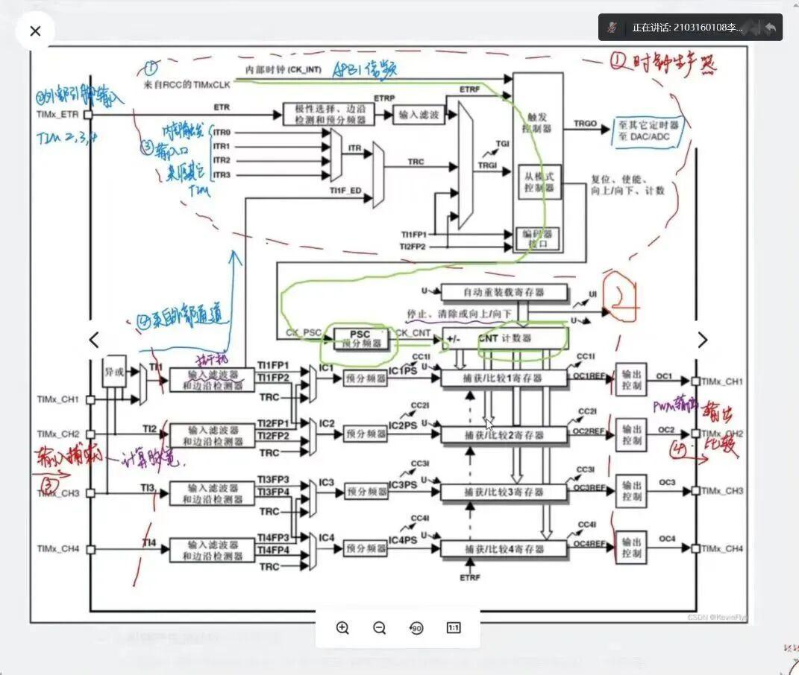
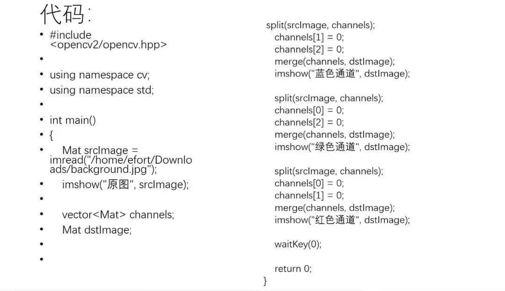
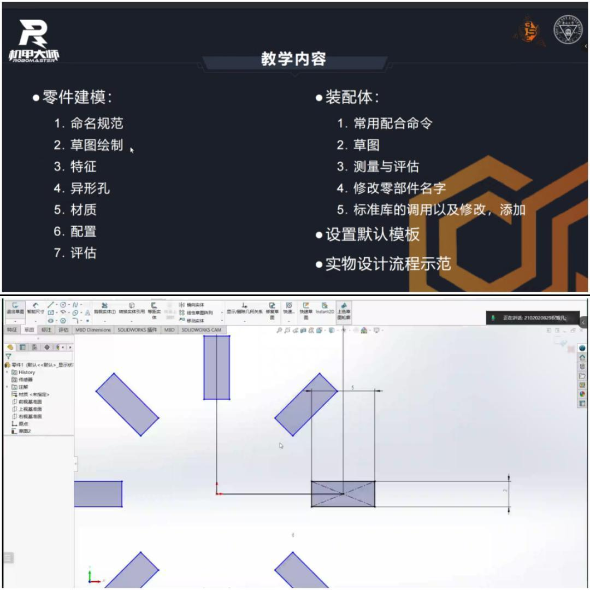
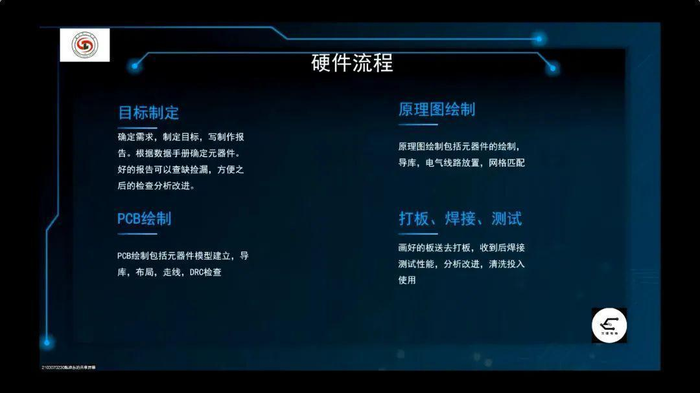
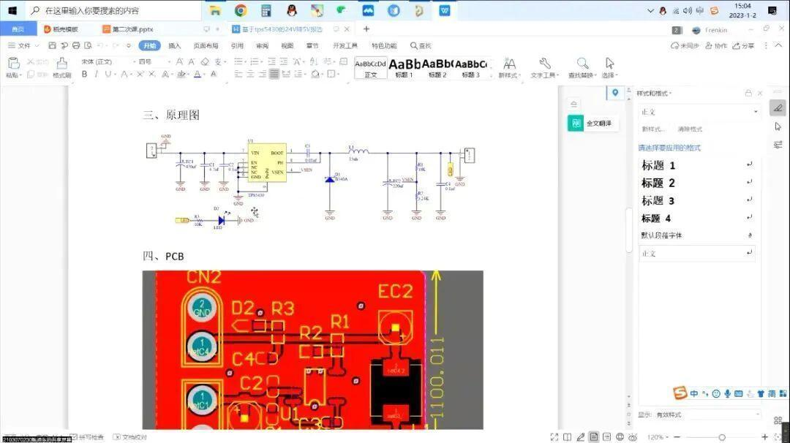

战队日记 | 技术部第二次教学

通过第二次教学，大家对定时器有了一定的了解，同时也能够通过定时器更新中断，来控制LED灯的闪烁。

OpenCV是进行视觉学习最重要的工具，通过本次教学大家对OpenCV有了全面的了解，能够通过OpenCV处理图像。

机械组

1.通过本次教学了解了SolidWorks草图和三维图形绘制的基础操作
2.学会了SolidWorks的一些能提高绘图效率的快捷操作

硬件组

通过第二次教学，大家对画元器件，找资料，以及选择电压的方面有了进一步了解。


-END-
排版|入眠
文案|入眠
图片|沈理电协
审核|恩嘉